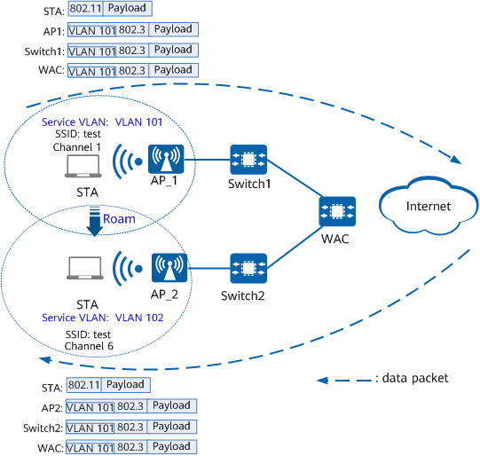

Layer 2 and Layer 3 Roaming
Depending on whether a STA roams within the same subnet, STA roaming is categorized as Layer 2 or Layer 3 roaming. In Layer 2 roaming, a STA remains in the original subnet after roaming. In Layer 3 roaming, a STA roams between different subnets.
Roaming within the same VLAN pool is still considered Layer 2 roaming.
Layer 2 Roaming
STAs stay in the same subnet before and after Layer 2 roaming. The FAP forwards packets of Layer 2 roaming STAs in the same way as those of new online STAs. Specifically, the FAP directly forwards the packets on its local network.

Currently, Layer 2 roaming is supported only on the same WAC but cannot be performed between WACs.
Figure 1 shows the packet paths before and after Layer 2 roaming (intra-AC roaming).
Before Roaming |
After Roaming |
|---|---|
|
|
Layer 3 Roaming
STAs stay in different subnets before and after Layer 3 roaming.
Currently, Layer 3 roaming is supported only on the same WAC but cannot be performed between WACs.
The service VLANs of the HAP and FAP are different. As such, the service VLAN of a STA must remain the same after it roams to another AP.
As shown in Figure 2, in direct forwarding mode, when a STA roams from AP_1 to AP_2 and the data packets arrive at AP_2, AP_2 tags the packets with VLAN 101 and then forwards them to the upper-level network. Similarly, when a STA roams from AP_2 to AP_1 and the data packets arrive at AP_1, AP_1 tags the packets with VLAN 102 and then forwards them to the upper-level network.

Therefore, configure the interfaces on Switch1 and Switch2 between the WAC and APs and the WAC's uplink and downlink interfaces to permit packets from VLAN 101 and VLAN 102 to pass.
If there are no switches between the WAC and APs, configure the WAC's uplink and downlink interfaces to permit packets from VLAN 101 and VLAN 102.